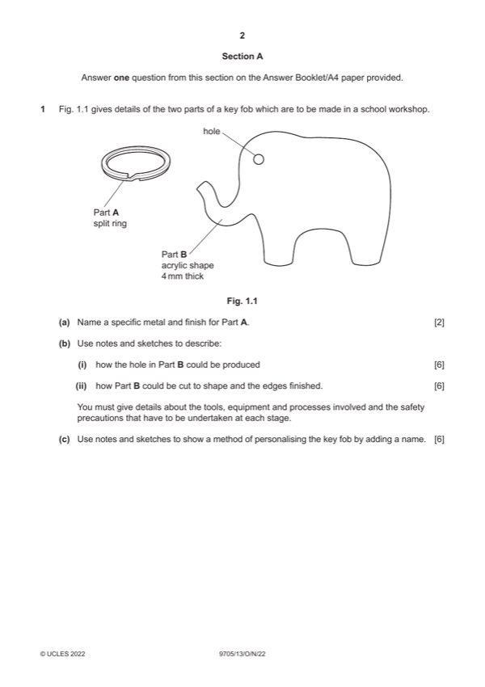

Question 1

Original paper page 2
Part 1(a) — solution
Exemplar answer 2 AOVR including:
Medium-carbon steel [1] High-carbon steel
Chromium plated [1] Spring steel
0–2
Mark points
- Include the ideas shown in the solution above.
Part 1(b)(i) — solution
Sketches and/or notes show: 6 Accept hand or CNC methods.
Marking out and drilling Exemplar answer:
Suitable method [3] • Mark centre of hole
Tools, equipment or processes [2] • Drill
Safety precaution [1]
0–6
Mark points
- Include the ideas shown in the solution above.
Part 1(b)(ii) — solution
Sketches and/or notes show: 6 Accept hand or CNC methods.
Cutting out and finishing the edges Exemplar answer:
Suitable method [3] • Cut out with abra file
Tools, equipment or processes [2] • Smooth edges with file, wet and dry and polish
Safety precaution [1]
0–6
Mark points
- Include the ideas shown in the solution above.
Part 1(c) — solution
Sketches and/or notes show: 6 Accept hand or CNC methods.
Suitable method identified for adding name e.g. self- Exemplar answers:
adhesive vinyl sticker • Adding sticker
Description of method [0–3] • Engraving
Tools and/or equipment named [0–3]
0–6
2022 Page 4 of 22
9705/13 Cambridge International AS & A Level – Mark Scheme October/November 2022
Guidance
Mark points
- Include the ideas shown in the solution above.